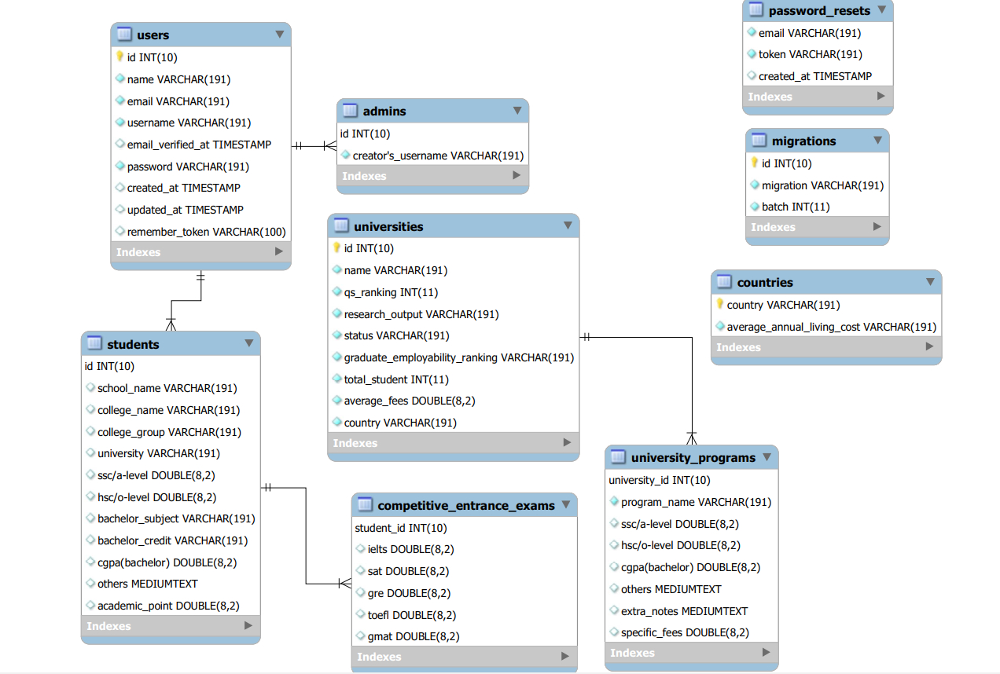
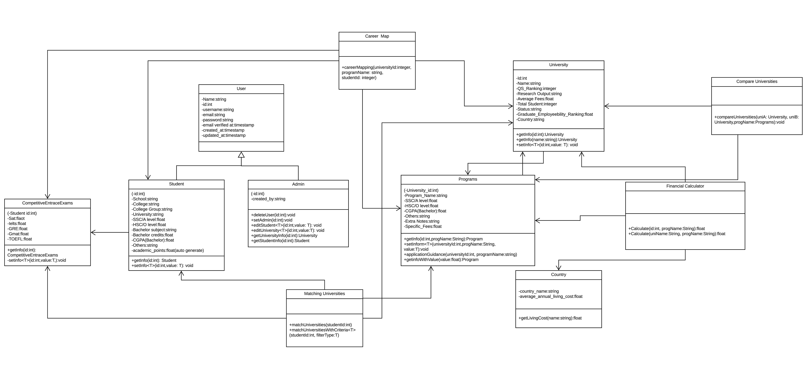
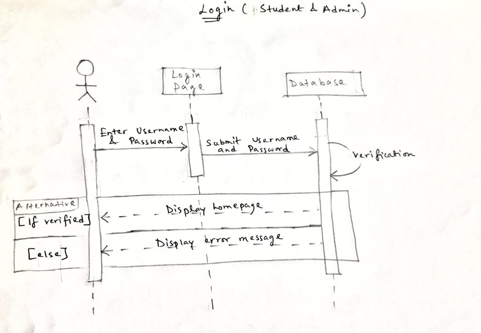
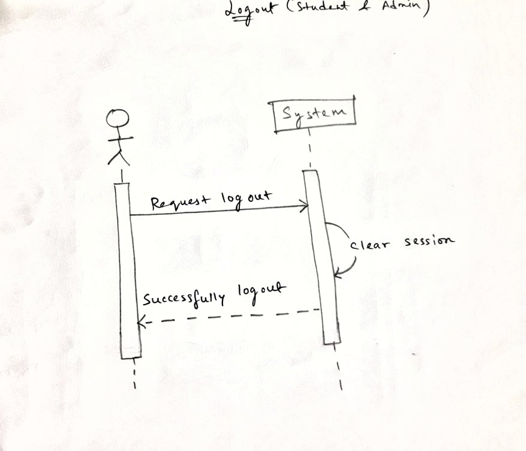

Purpose
The purpose of this software design specification is to outline the software architecture and design of Academic Counselling Assistant (ACA). The document will show several views of the system design.
Architectural Design
The software basically has 2 components. The frontend UI for both admins and end users, and the database that only admins will see and interact with.
Architectural Pattern
ACA will be developed in the MVC architectural style. There are three main components to it
- Model component, which manages the data
- View component, which determines how the data is presented
- Controller component, that manages the both model and view components.
The purpose of using MVC is to separate the user interface from the logic so that it is easier to
handle and this makes it more flexible to alter data or its representation. Hence being an easy option
for web applications.
Database Schema

Class Diagram

Class Descriptions
Users
This class responsibility is to handle the users and their registration information. It holds the users name an unique id that will be randomly generated in the backend, an unique username, email and password. The user class has two child class Student and Admin.
Student
Upon registration, user may fill out further details of educational background that would help customize the search result. The student class contains the student’s profile . "Competitive entrance exam" inherits student class and contains test scores of other tests that the student may have taken such as SAT, GREs, etc.
Student has two methods.
-GetInfo takes an integer as a parameter. It calls for student information by the unique student id
-setInfo has three parameters: an integer, a value and a string type. The purpose of this method is to edit student information.
Admin
The admin class has a number of methods that allow it to change info regarding Students and Universities. Additionally, it has the power to delete an user.
Career map
This class controls information regarding various subjects offered around the world and the possible careers or further studies it is related to. Career mapping method takes name of university and program name and the student’s ID that invoked the action as parameters. The class is associated to "competitive entrance exam" ,"student" ,"university" and "programs" class.
University
The job of this class is to hold information about a large collection of the top rated universities. It will hold info on ranking, name, location,fees. University class is associated with "programs" class.
-GetInfo is a method that takes an integer as a parameter. It calls for student information by the unique student id
-setInfo has three parameters: an integer, a value and a string type. The purpose of this method is to edit student information.
Programs
Programs class contains detailed information of the individual programs offered by the university.
Financial Calculator
The responsibility of this class is to calculate an estimate of the total expense for a particular degree from a given university mentioned in the parameter by the user. It is associated with "university" class and "programs" class. -calculate is a method that basically takes the required information from "programs" and "university" class and calculates an estimate of the total expense. It the shows the result to the user. The method takes student id, program name and university name as an integer. It is also associated with country in order to take into account living expenses.
Sequential Diagrams

